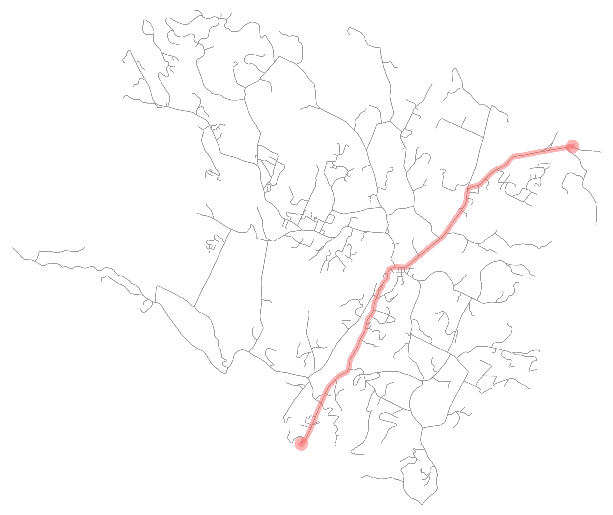

ROUTE POINTS
Source: (44.427876, -72.716742)
Destination: (44.491012, -72.631137)
Total Distance: 10730.2 meters
Route calculated in 0.0 seconds using Bellman-Ford

DIRECTIONS
Travel Northeast for 3324 meters along Waterbury Road
Slight left onto South Main Street
Travel Northeast for 894 meters along South Main Street
Slight right onto Cliff Street
Travel Northeast for 266 meters along Cliff Street
Slight right onto South Main Street
Travel Northeast for 598 meters along South Main Street
Turn right onto Main Street
Travel Southeast for 220 meters along Main Street
Turn left onto ['Main Street', 'Maple Street']
Travel Northeast for 34 meters along ['Main Street', 'Maple Street']
Slight left onto Maple Street
Travel Northeast for 1085 meters along Maple Street
Slight left onto Pucker Street
Travel Northeast for 3522 meters along Pucker Street
Slight right onto Randolph Road
Travel Northeast for 783 meters along Randolph Road